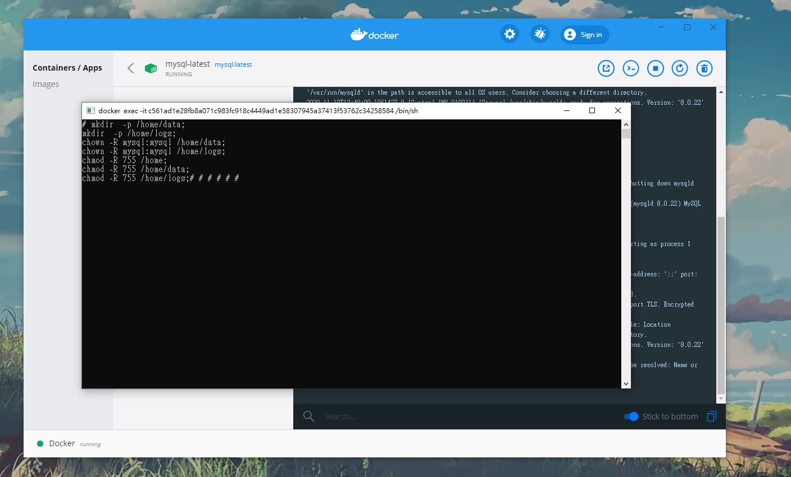
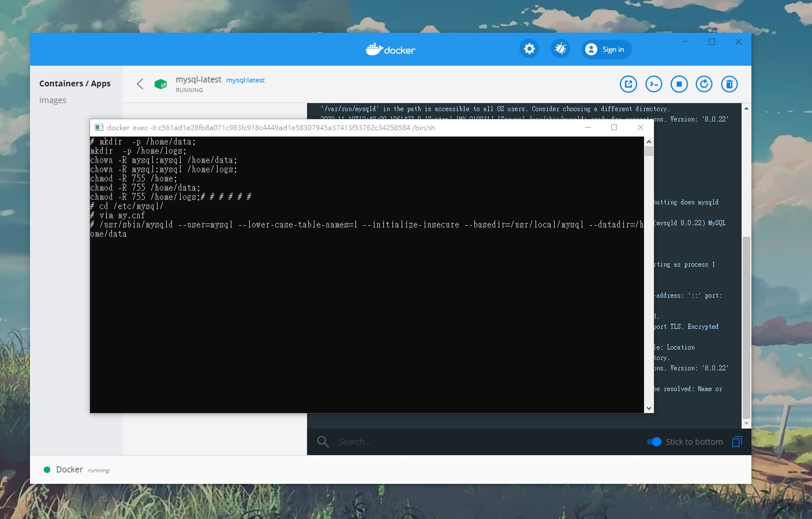
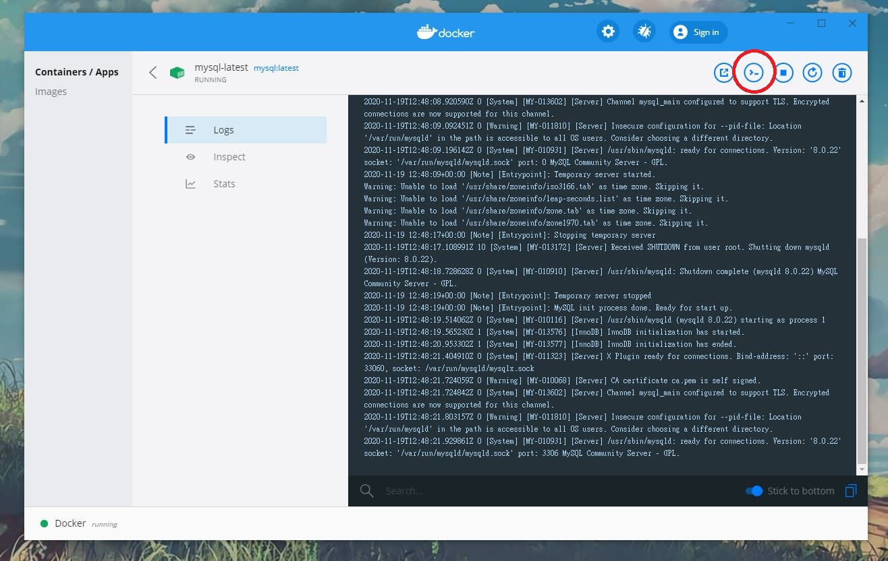
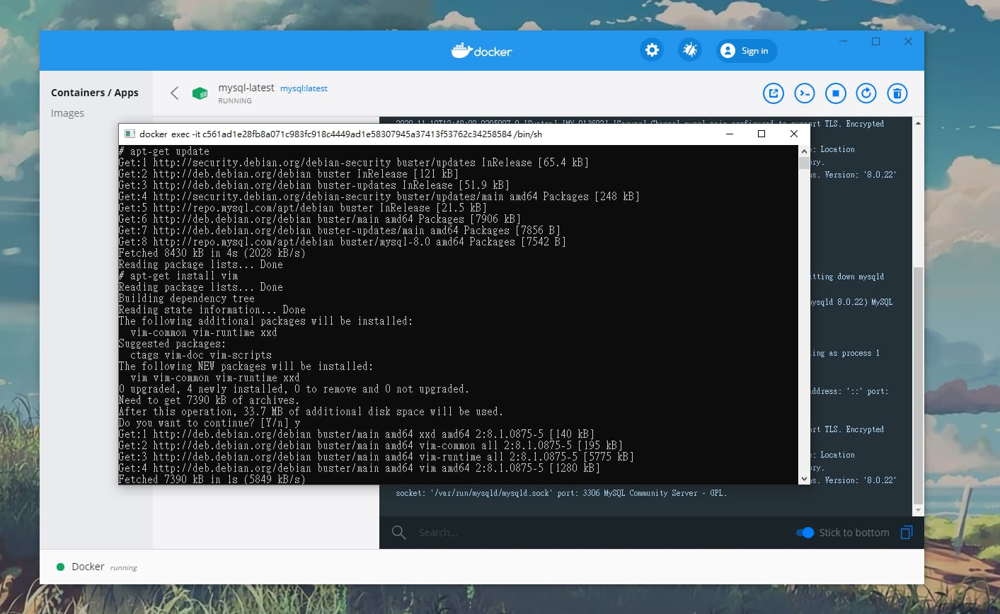
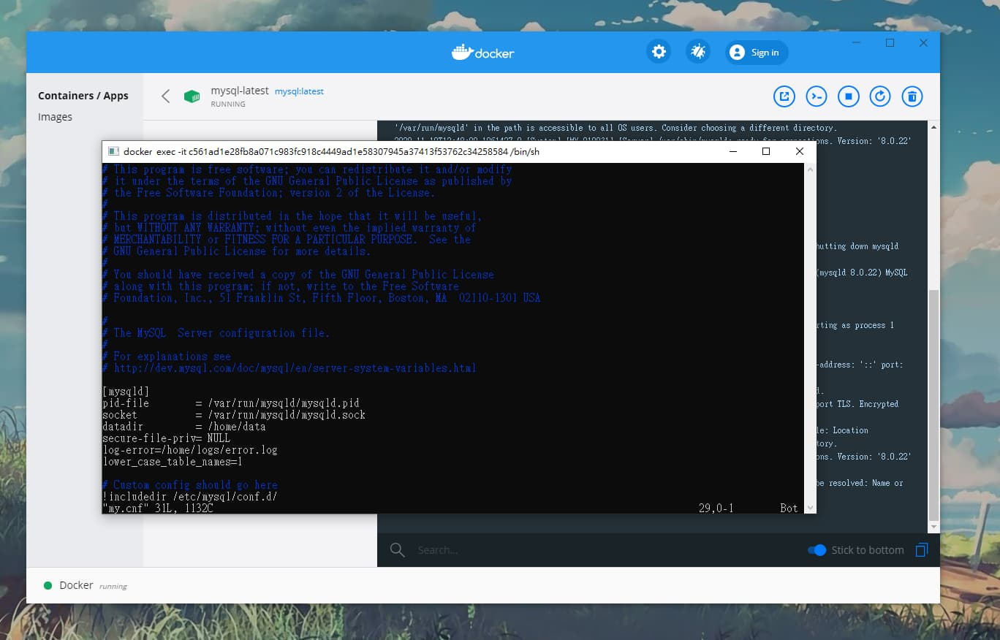
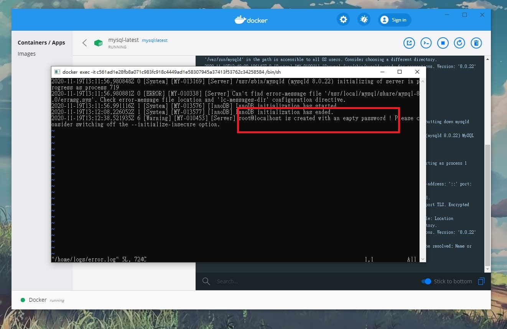
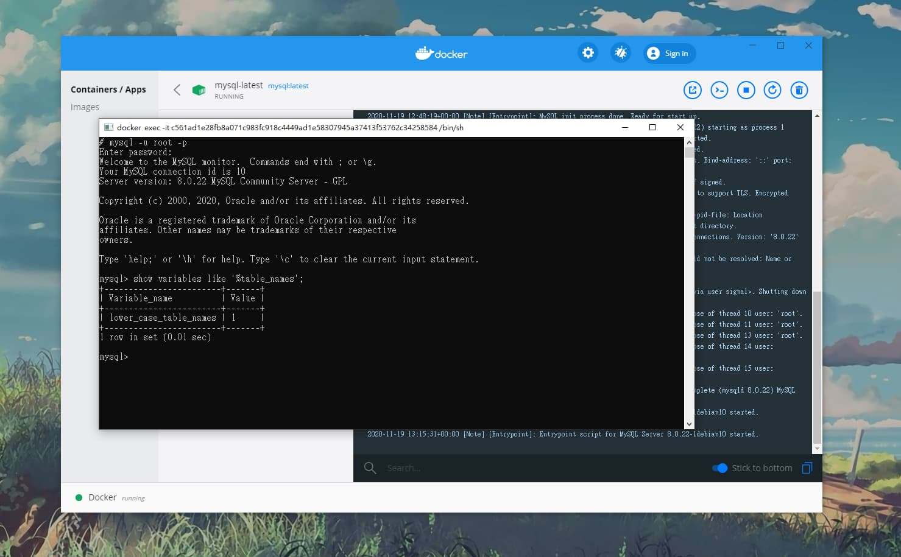

Docker教學3：在Docker內解決MySQL發生大小寫敏感問題
2020-12-18
上一篇我們教學如何使用安裝Docker建置了一個，本篇會教學如何使用Docker找到鏡像檔(image)、下載鏡像檔(image)、啟動鏡像檔(image)封裝成容器(container)，以安裝MySQL 8為例實際詳細的步驟，也會順便教導如何在Docker內開啟MySQL遠端訪問許可權(對外連線)。
前言
還沒學過安裝Docker、以及建置容器的的可以參考前兩篇。
Docker教學1：在Windows Docker安装教學、初步設定
Docker教學2：如何使用Docker建立MySQL 8的環境以及管理連線設定
MySQL在Windows中是不區分大小寫(lower_case_tables_names屬性預設為1)，但在Linux(lower_case_tables_names屬性預設為0)中是區分大小寫。
Docker裏頭就是Linux核心！！！
Docker裏頭就是Linux核心！！！
Docker裏頭就是Linux核心！！！
因為很重要所以講三次(老梗)
所以可能會遭遇到SQL語法在執行時遇到大小寫敏感而產生錯誤，現在就讓我們來解決它吧!
注意事項
※ 優先注意，以下操作必須「初始化資料庫」，所以資料庫內容會被清空，請記得做備份的動作，還有像上一篇教學內，創建帳號開放對外連線的號也會跟著初始化而消失，需要再重新創建一次。
教學步驟
- 快按兩下打開容器後，點選右上CLI按鈕，開啟容器終端環境(bash)快按兩下打開容器後，點選右上CLI按鈕，開啟容器終端環境(bash)
-
先安裝編輯文件的套件，才能進行修改config(屬性配置檔)設定，在終端畫面中輸入指令：
apt-get update;▲更新軟體的最新資訊及列表
apt-get install vim;▲安裝vim套件，這指令途中會確認輸入，請輸入
Y -
修改檔案路徑，在終端畫面中依序輸入指令：
mkdir -p /home/data; mkdir -p /home/logs; chown -R mysql:mysql /home/data; chown -R mysql:mysql /home/logs; chmod -R 755 /home; chmod -R 755 /home/data; chmod -R 755 /home/logs;
-
修改config(屬性配置檔)，在終端畫面中輸入指令：
cd /etc/mysql/▲進入檔案路徑
vim my.cnf▲編輯my.cnf檔
-
按i進入編輯模式，找到檔案中[mysqld]區塊，修改以及新增以下屬性(有的修改、沒有的就新增)
[mysqld] datadir=/home/data log-error=/home/logs/error.log lower_case_table_names=1輸入完後按ESC退出編輯模式，之後輸入：
:wq▲存檔並關閉檔案
參考如下圖：
-
重新初始化資料庫設定，在終端畫面中輸入指令：
/usr/sbin/mysqld --user=mysql --lower-case-table-names=1 --initialize-insecure --basedir=/usr/local/mysql --datadir=/home/data ▲這邊需要點時間，請耐心等候。
-
查看是否有初始化成功，在終端畫面中輸入指令：
vi /home/logs/error.log -
重新啟動Docker，確認是否真的有修改成功，重新開啟CLI，在終端畫面中輸入指令：
mysql -u root -p▲登入root帳號，請注意！因重新初始化資料庫，root帳號變為空，密碼直接Enter就好
show variables like '%table_names';



請注意！執行到這邊後請勿重新開啟Docker，重啟後容器將無法啟動(因為設定與初始不一致的關係) 接下來我們馬上來解決這問題。
 ▲看到is created with an empty password(密碼為空值)等字眼，表示成功了。
 看到以上畫面表示成功囉。
結論
MySQL這坑也是害人不淺，不少人踩過，當然包括我。哈哈哈~ 特別寫一篇來紀錄步驟以免忘記，也分享給大家來避免採坑或者幫忙解決。